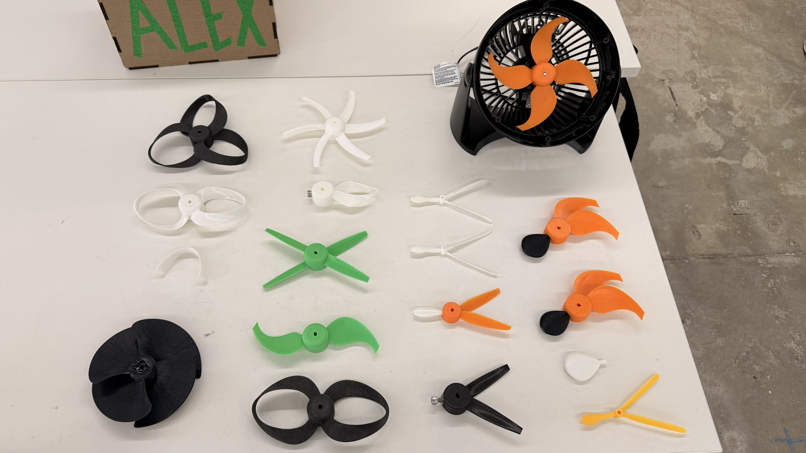

Interactive 3D Model - Selected Prototypes
Drag to rotate, scroll to zoom, and right-drag to pan around the printable propeller geometry.
Model: EarlyEntryZipline.stl
Project Overview
After I accidentally broke the stock propeller on my desk fan, I set out on a mission to design a replacement that would be quieter and more efficient than the original. I researched many designs that are known to be detectibly quieter than traditional designs including: toroidal, zipline, and skewed traditional. Each of the propellers in the above pictures I designed, learning lofting, guide rails, and analytic tools like center of mass in Fusion. I even consulted AI to see what factors would dramatically decrease audible volume, to no avail. Ultimately, I discovered that while some of my designs were quieter than the original, frequency (speed) is the main contributor to loud propellers, and that was the one variable I could not change. I ended up completing this project with the orange, 4-blade propeller with my custom “Early Entry” blade design which was about the same as the original in noise but dramatically more directed and stronger in airflow.
Project Highlights
Selected prototypes and their role in the design process
.jpg)
.jpg)
.jpg)
.jpg)
.jpg)
.png)